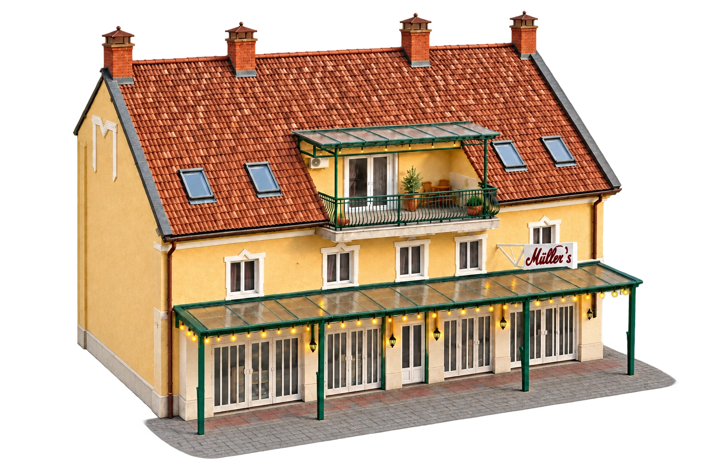
Az egész ház. Csak Nektek.
Privát wellness a belváros szívében.
Pihenjetek a Balatonnál minden évszakban.
Tájékoztató sétaidők · A képek helyszín-illusztrációk.
Görgess lejjebb, hogy megismerd a házat.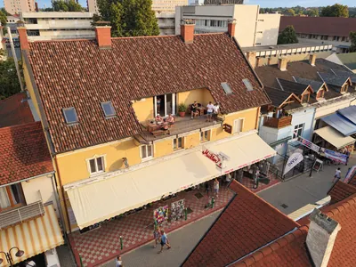
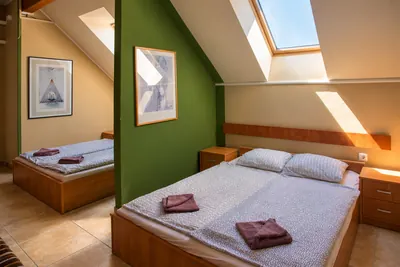
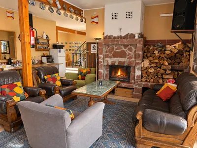
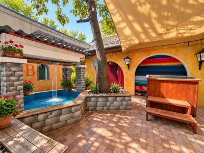
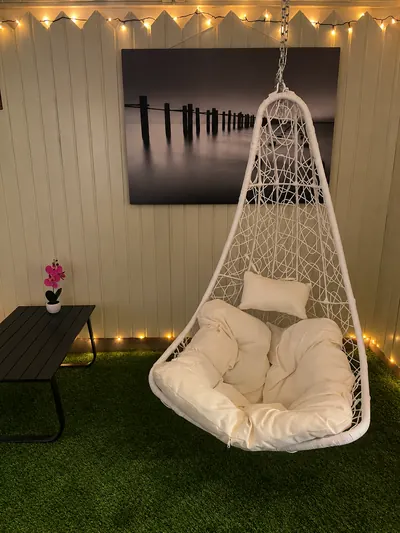
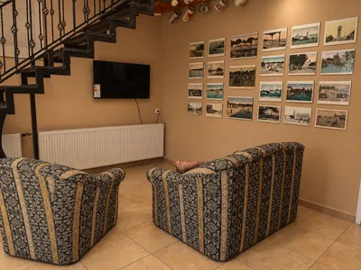
„Az egész ház.
Csak Nektek.”
Mi lenne, ha egy hétvégére az egész élmény csak a Tiétek lenne?
10–16 fővel, de akár 30-an is érkezhettek.
Nézzetek körül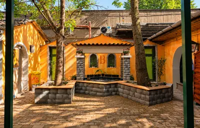
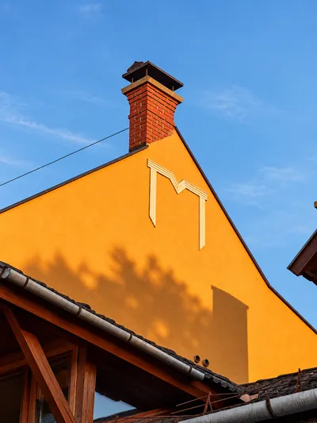
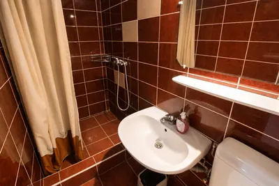
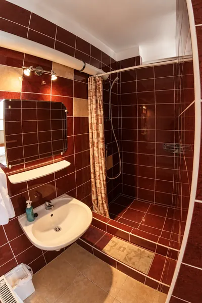
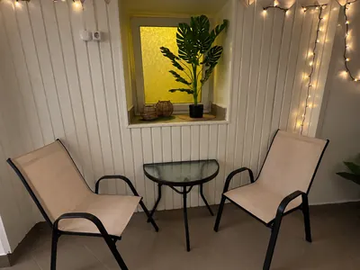
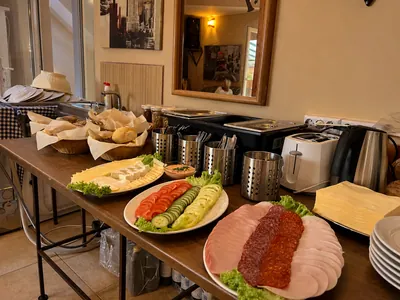
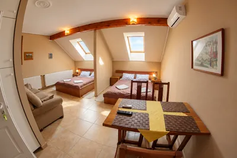
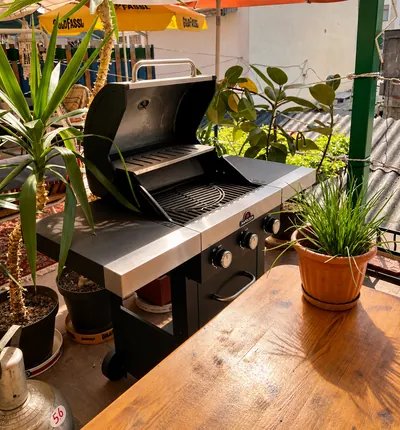
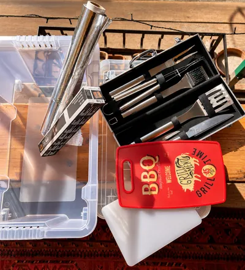
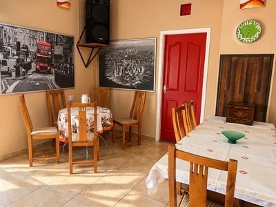
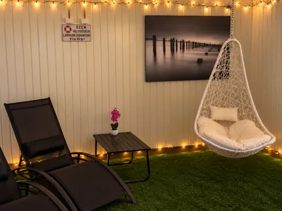
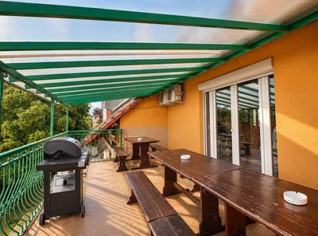
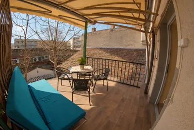

Szobák
A közös kikapcsolódás után panziónkban négy négyfős, egy hatfős szoba és két apartman vár Benneteket. Az egyik négyágyas, a másik két szinten nyolcágyas.

Kandallós
társalgó
Egy légtér, több lehetőség
Beszélgetés a kandalló előtt vagy a teraszon, a tévésarokban közös filmnézés, egy másik asztalnál társasjáték, sakk- vagy kártyaparti.
De itt lehetnek a közös reggelik, vacsorák is. Hűtőszekrény, kávéfőző, vízforraló, mikrosütő is rendelkezésre áll, de a vacsorarendelésben is segítünk.
Udvari merülő
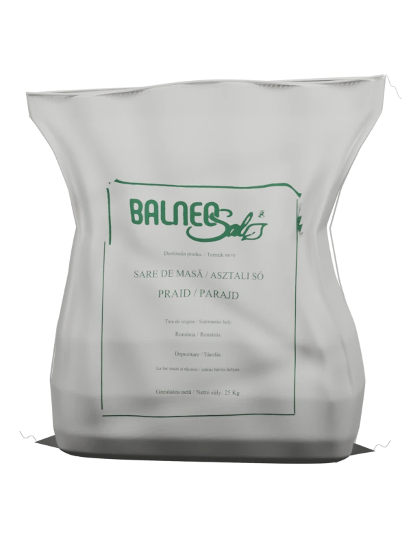
A szauna után jöhet a parajdi sós, hideg vizes, udvari merülő.

Sószoba

Csendes kikapcsolódás akár egyszerre hét fő számára. Sótéglák hangulatvilágítással a falakon, sókristályok a lábatok alatt. A teljes élményt a Bestlifepro sógenerátora biztosítja, amely finomra őrölt sót juttat a levegőbe.

Szauna
Nem kell alkalmazkodnotok senki máshoz. Kellemes faillat, megnyugtató fények. Két fekvőhely található a felső szinten, de ülve akár hat fő számára is kényelmes.

Jacuzzi
Két fekvő- és egy ülőhely a pezsgőfürdőben. A hangulatvilágítás színei a jacuzziban és a szobában is választhatóak. A jacuzzihoz pihenőszoba kapcsolódik.
Melyik hétvége
legyen a tiétek?
Válasszatok érkezési és távozási dátumot, adjátok meg az adataitokat, és kollégánk felveszi veletek a kapcsolatot.
Bemutató · Mintaidőpontok
Először válasszátok ki az érkezés napját.
A nyílbillentyűkkel léphettek a napok között. Page Up és Page Down: hónapváltás. Enter: először az érkezési, majd a távozási nap kiválasztása.